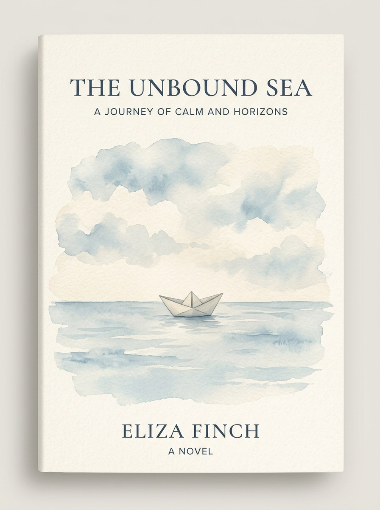

「若世界已將你遺忘，我便將整片天空摺成小舟，帶你航向未曾被寫入歷史的彼岸。」
當漫長潮水終於退去，那些被大崩解時代遺忘的白珊瑚群島重新浮出地表。一名失去全部記憶的年輕領航員，在一艘宛如白紙摺就的輕舟上甦醒。在沒有盡頭的蒼藍海面上，他將尋找星辰遺落的最初約定。

在文字構築的世界裡慢下腳步，探索長篇連載與短篇創作
拾起那些在時光中發光的句子，安放短暫的共鳴
這是一個為您預留的長條按鈕功能區塊！所有長條按鈕的標題、小標、標籤與點擊連結，都存放在 js/data.js 檔案中的 RESERVED_STRIP_BUTTONS 陣列內。
js/data.js
RESERVED_STRIP_BUTTONS
您可以將其連接至外部連結（如 Google 表單、方格子專題、博客來購書網址），或者設定點擊彈窗！
為防止一般讀者誤觸或修改作品內容，開啟作者後台前請先輸入解鎖密碼。 (預設作者密碼：0314)
0314
填寫表單後點擊「儲存」，可在網頁即時預覽，或直接「複製程式碼」貼至 data.js。
data.js